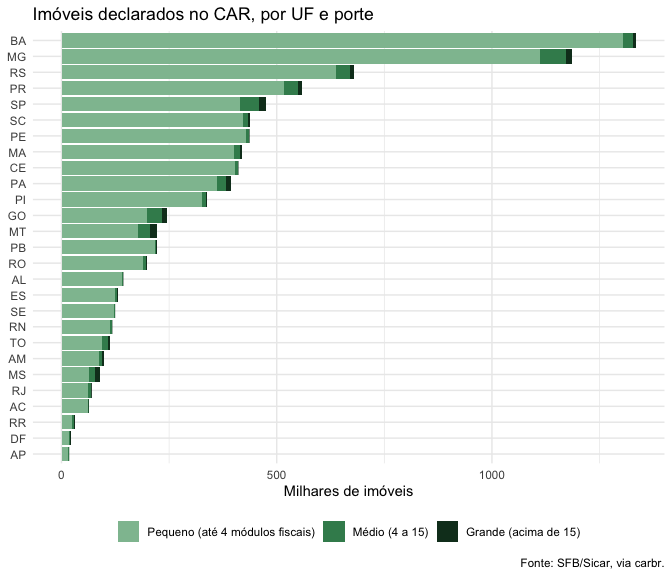
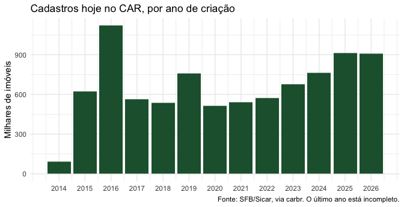
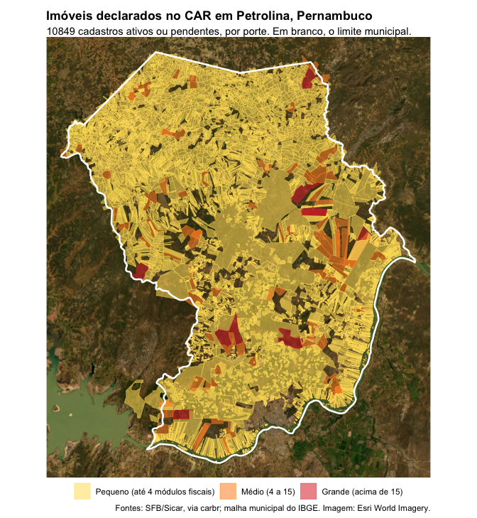

O Cadastro Ambiental Rural (CAR) é o registro
público eletrônico dos imóveis rurais do país, criado pelo Código
Florestal (Lei nº 12.651/2012) e mantido no Sicar pelo Serviço Florestal
Brasileiro. O carbr lê uma republicação dos dados públicos
do cadastro em GeoParquet, com as 27 UFs e cerca de 8,6 milhões de
imóveis. Cada consulta transfere só os trechos do arquivo de que
precisa, sem baixar a base de um estado inteiro e sem passar pelos
servidores do Sicar.
| Função | Para quê |
|---|---|
car_catalog() |
O que está publicado |
car_dictionary() |
O que cada coluna significa |
car_summary() |
Totais pré-calculados, do estado ou do país |
car_municipalities() |
Resumo por município |
car_properties() |
Imóveis de uma UF, com filtros |
car_property() |
Um imóvel pelo código |
car_at() |
Imóveis que contêm um ponto |
car_tbl() |
Tabela preguiçosa para o dplyr
|
car_cite() |
Como citar |
O que está publicado
car_catalog() traz uma linha por UF, com o número de
imóveis e os indicadores de qualidade da carga. A versão é a data da
última atualização da publicação.
cat <- car_catalog()
cat
#> # A tibble: 27 × 6
#> state properties municipalities invalid_geometries null_geometries
#> <chr> <int> <int> <int> <int>
#> 1 AC 63349 22 19 0
#> 2 AL 143973 102 19 0
#> 3 AM 99056 62 94 0
#> 4 AP 17834 16 2 0
#> 5 BA 1334593 416 2 0
#> 6 CE 410650 184 56 0
#> registered_in_other_state
#> <int>
#> 1 0
#> 2 5
#> 3 0
#> 4 0
#> 5 1
#> 6 3
#> # ℹ 21 more rows
attr(cat, "version")
#> [1] "2026-11-25"
sum(cat$properties)
#> [1] 8578061O dicionário de dados diz o que é cada coluna e qual era o seu nome no Sicar.
car_dictionary() |> print(n = 22)
#> # A tibble: 22 × 3
#> column sicar_name
#> <chr> <chr>
#> 1 property_code cod_imovel
#> 2 status_code status_imovel
#> 3 status <NA>
#> 4 condition condicao
#> 5 property_type_code tipo_imovel
#> 6 property_type <NA>
#> 7 created_at dat_criacao
#> 8 area_ha area
#> 9 fiscal_modules m_fiscal
#> 10 size_class <NA>
#> 11 state uf
#> 12 municipality municipio
#> 13 municipality_code cod_municipio_ibge
#> 14 registration_state <NA>
#> 15 lon <NA>
#> 16 lat <NA>
#> 17 geometry_valid <NA>
#> 18 xmin <NA>
#> 19 ymin <NA>
#> 20 xmax <NA>
#> 21 ymax <NA>
#> 22 geometry geo_area_imovel
#> description
#> <chr>
#> 1 Código do imóvel no CAR (UF-município IBGE-identificador).
#> 2 Situação do cadastro: AT ativo, PE pendente, SU suspenso, CA cancelado.
#> 3 Situação do cadastro por extenso, derivada de status_code.
#> 4 Etapa da análise em que o cadastro está, como informada pelo Sicar.
#> 5 IRU imóvel rural, AST assentamento, PCT povos e comunidades tradicionais.
#> 6 Tipo do imóvel por extenso, derivado de property_type_code.
#> 7 Data e hora de criação do cadastro (UTC).
#> 8 Área declarada do imóvel, em hectares.
#> 9 Área em módulos fiscais do município.
#> 10 small até 4 módulos fiscais, medium acima de 4 até 15, large acima de 15.
#> 11 UF onde o imóvel está localizado.
#> 12 Município onde o imóvel está localizado.
#> 13 Código IBGE do município (7 dígitos).
#> 14 UF do prefixo de property_code; pode diferir de state.
#> 15 Longitude de um ponto dentro do imóvel (SIRGAS 2000).
#> 16 Latitude de um ponto dentro do imóvel (SIRGAS 2000).
#> 17 Se a geometria declarada é válida (sem autointerseção etc.).
#> 18 Limite oeste do retângulo envolvente do imóvel, para filtro espacial na leit…
#> 19 Limite sul do retângulo envolvente.
#> 20 Limite leste do retângulo envolvente.
#> 21 Limite norte do retângulo envolvente.
#> 22 Perímetro declarado do imóvel, WKB, EPSG:4674. Nulo se o Sicar não traz.O país inteiro, sem ler os imóveis
car_summary() lê tabelas pequenas, calculadas na
publicação, com a contagem de imóveis e a área declarada por UF,
situação, porte, tipo, etapa da análise e ano de criação do cadastro. O
argumento by escolhe as dimensões; NULL dá o
total.
car_summary(NULL)
#> # A tibble: 1 × 2
#> properties area_ha
#> <int> <dbl>
#> 1 8578061 816130359.
car_summary("size_class")
#> # A tibble: 3 × 3
#> size_class properties area_ha
#> <chr> <int> <dbl>
#> 1 large 142974 410551844.
#> 2 medium 398351 133970230.
#> 3 small 8036736 271608284.Os pequenos imóveis, de até quatro módulos fiscais, são mais de nove em cada dez cadastros e um terço da área declarada. Por UF:
by_state <- car_summary(c("state", "size_class"))
by_state |>
mutate(
state = reorder(state, properties, sum),
size_class = factor(size_class, c("large", "medium", "small"))
) |>
ggplot(aes(properties / 1e3, state, fill = size_class)) +
geom_col() +
scale_fill_manual(
values = c(small = "#8fbf9f", medium = "#3d8a5c", large = "#123a23"),
breaks = c("small", "medium", "large"),
labels = c("Pequeno (até 4 módulos fiscais)", "Médio (4 a 15)", "Grande (acima de 15)"),
name = NULL
) +
labs(
title = "Imóveis declarados no CAR, por UF e porte",
x = "Milhares de imóveis", y = NULL,
caption = "Fonte: SFB/Sicar, via carbr."
) +
theme_minimal() +
theme(legend.position = "bottom")
plot of chunk estados
A etapa da análise mostra onde o cadastro está parado:
car_summary("condition") |>
arrange(desc(properties)) |>
mutate(share = round(100 * properties / sum(properties), 1)) |>
select(condition, properties, share) |>
print(n = 8)
#> # A tibble: 15 × 3
#> condition
#> <chr>
#> 1 Aguardando análise
#> 2 Analisado, aguardando atendimento a notificação
#> 3 Analisado, em conformidade com a Lei nº 12.651/2012
#> 4 Analisado, em conformidade com a Lei nº 12.651/2012, com ativos ambientais
#> 5 Analisado, aguardando regularização ambiental (Lei nº 12.651/2012)
#> 6 Cancelado por decisão administrativa
#> 7 Aguardando análise, após revisão ou atendimento da notificação
#> 8 Em análise
#> properties share
#> <int> <dbl>
#> 1 5978543 69.7
#> 2 1309315 15.3
#> 3 460502 5.4
#> 4 191767 2.2
#> 5 189447 2.2
#> 6 161970 1.9
#> 7 134338 1.6
#> 8 109335 1.3
#> # ℹ 7 more rowsE o ano de criação dá a linha do tempo do cadastramento:
car_summary("created_year") |>
ggplot(aes(created_year, properties / 1e3)) +
geom_col(fill = "#1f5f3a") +
scale_x_continuous(breaks = 2014:2026) +
labs(
title = "Cadastros hoje no CAR, por ano de criação",
x = NULL, y = "Milhares de imóveis",
caption = "Fonte: SFB/Sicar, via carbr. O último ano está incompleto."
) +
theme_minimal()
plot of chunk anos
As dimensões combinam, e state restringe a uma ou mais
UFs:
car_summary(c("status", "size_class"), state = c("PE", "BA"))
#> # A tibble: 12 × 4
#> status size_class properties area_ha
#> <chr> <chr> <int> <dbl>
#> 1 active large 8236 15511306.
#> 2 active medium 27968 9622438.
#> 3 active small 1725262 23741938.
#> 4 cancelled large 164 760332.
#> 5 cancelled medium 250 94439.
#> 6 cancelled small 4541 232247.
#> 7 pending large 222 487656.
#> 8 pending medium 420 137210.
#> 9 pending small 3669 87631.
#> 10 suspended large 13 67994.
#> 11 suspended medium 8 2959.
#> 12 suspended small 30 2373.Resumo por município
O resumo municipal também é pré-calculado. Sem argumento, traz os municípios de todas as UFs.
car_municipalities() |>
arrange(desc(properties)) |>
select(state, municipality, properties, small_properties, area_ha, pending)
#> # A tibble: 5,564 × 6
#> state municipality properties small_properties area_ha pending
#> <chr> <chr> <int> <int> <dbl> <int>
#> 1 RO Porto Velho 25819 24145 3296893. 5446
#> 2 BA Monte Santo 24609 24541 188974. 0
#> 3 DF Brasília 21049 17597 1202233. 135
#> 4 BA Pilão Arcado 16403 16241 1061906. 1
#> 5 PE Araripina 15663 15625 187423. 1
#> 6 BA Euclides da Cunha 14962 14892 135744. 44
#> # ℹ 5,558 more rowsImóveis de um município
car_properties() traz os imóveis de uma UF, com filtros
aplicados antes da leitura: só os trechos do arquivo que atendem ao
filtro são transferidos. Aqui, todos os imóveis de Petrolina, em
Pernambuco — cerca de 11 mil, de um arquivo estadual com mais de 400
mil. Com o pacote sf instalado, o resultado é um objeto
sf em SIRGAS 2000.
petrolina <- car_properties("PE", municipality = "Petrolina")
petrolina |> select(property_code, status, area_ha, fiscal_modules, size_class)
#> Simple feature collection with 10918 features and 5 fields
#> Geometry type: MULTIPOLYGON
#> Dimension: XY
#> Bounding box: xmin: -40.96095 ymin: -9.480338 xmax: -40.2083 ymax: -8.623582
#> Geodetic CRS: SIRGAS 2000
#> # A tibble: 10,918 × 6
#> property_code status area_ha fiscal_modules
#> <chr> <chr> <dbl> <dbl>
#> 1 PE-2611101-0D7CB5B3271D4C10BB99569D4857BA39 active 52.9 0.962
#> 2 PE-2611101-111805B2DFBA4AF7B2BE2458D8CE27FD active 652. 11.6
#> 3 PE-2611101-4E7C9A07F92E4181A8CD600ECAE54DDF active 2.85 0.0518
#> 4 PE-2611101-328696C6E5DD436D9AAB872A359C600A active 40.9 0.738
#> 5 PE-2611101-D0361CB6B3964A1781A0D7E4C507D83C active 2.51 0.0456
#> 6 PE-2611101-F180E6F04B0B4F39A28C791C4F1BECE8 active 9.65 0.176
#> size_class geometry
#> <chr> <MULTIPOLYGON [°]>
#> 1 small (((-40.75791 -9.422134, -40.75838 -9.422132, -40.75881 -9.422129, …
#> 2 medium (((-40.75303 -9.397993, -40.75799 -9.422049, -40.73045 -9.4222, -4…
#> 3 small (((-40.75751 -9.434869, -40.76116 -9.42215, -40.76103 -9.422122, -…
#> 4 small (((-40.76185 -9.422066, -40.76021 -9.422124, -40.75976 -9.422127, …
#> 5 small (((-40.7527 -9.436908, -40.75283 -9.436965, -40.75362 -9.434765, -…
#> 6 small (((-40.75283 -9.436965, -40.75362 -9.434765, -40.75369 -9.43459, -…
#> # ℹ 10,912 more rowsSobre uma imagem de satélite, o cadastro mostra a ocupação do
município: os lotes estreitos dos perímetros irrigados junto ao rio São
Francisco, ao sul e a leste, e os imóveis maiores da caatinga, ao norte.
O limite municipal é da malha do IBGE, lida direto da API de malhas; o
fundo vem do pacote maptiles e é desenhado com o
tidyterra.
valid <- petrolina |>
filter(geometry_valid, status != "cancelled") |>
mutate(size_class = factor(size_class, c("small", "medium", "large"))) |>
arrange(desc(area_ha))
boundary <- sf::read_sf(paste0(
"https://servicodados.ibge.gov.br/api/v3/malhas/municipios/2611101",
"?formato=application/vnd.geo%2Bjson&qualidade=maxima"
)) |>
sf::st_transform(4674)
imagery <- maptiles::get_tiles(
sf::st_buffer(boundary, 3000),
provider = "Esri.WorldImagery", zoom = 10, crop = TRUE
)
ggplot() +
tidyterra::geom_spatraster_rgb(data = imagery, maxcell = 2e6) +
geom_sf(
data = valid, aes(fill = size_class, colour = size_class),
linewidth = 0.15, alpha = 0.55
) +
geom_sf(data = boundary, fill = NA, colour = "white", linewidth = 0.9) +
scale_fill_manual(
values = c(small = "#ffe066", medium = "#ff922b", large = "#e03131"),
labels = c("Pequeno (até 4 módulos fiscais)", "Médio (4 a 15)", "Grande (acima de 15)"),
name = NULL, aesthetics = c("fill", "colour")
) +
coord_sf(expand = FALSE) +
labs(
title = "Imóveis declarados no CAR em Petrolina, Pernambuco",
subtitle = paste(nrow(valid), "cadastros ativos ou pendentes, por porte. Em branco, o limite municipal."),
caption = "Fontes: SFB/Sicar, via carbr; malha municipal do IBGE. Imagem: Esri World Imagery."
) +
theme_void() +
theme(
legend.position = "bottom", plot.title = element_text(face = "bold"),
plot.margin = margin(6, 6, 6, 6)
)
plot of chunk mapa-petrolina
Os filtros combinam. Só os imóveis grandes com cadastro ativo:
car_properties(
"PE",
municipality = "Petrolina", size_class = "large", status = "active",
geometry = FALSE
) |>
arrange(desc(area_ha)) |>
select(property_code, area_ha, fiscal_modules, condition)
#> # A tibble: 10 × 4
#> property_code area_ha fiscal_modules
#> <chr> <dbl> <dbl>
#> 1 PE-2611101-1D0D47540B264F2183AE47FFF23F1354 1820. 33.1
#> 2 PE-2611101-F9DE04E8745149E5B3557922FB5DD40D 1595. 29.0
#> 3 PE-2611101-E4D25AC2FB254BD0B3A29678D08F9C0E 1281. 23.3
#> 4 PE-2611101-C52BB95C85E24595B8392A28CB190C13 1037. 18.9
#> 5 PE-2611101-9FB673F34F904B3B951BD4DD2E7AFB18 1026. 18.6
#> 6 PE-2611101-F2B10E8F0D7749A89200B1B538FBAE86 1024. 18.6
#> 7 PE-2611101-6BEF7820114C4BE99B3974A937409469 996. 18.1
#> 8 PE-2611101-A0DF298BDC7C48ACB976417AA75C9050 995. 18.1
#> 9 PE-2611101-A94CA3B342CF444CBCB9C558E9A7CAFC 844. 15.3
#> 10 PE-2611101-1608C1C7C3374712B7934B207CE25D46 827. 15.0
#> condition
#> <chr>
#> 1 Aguardando análise
#> 2 Aguardando análise
#> 3 Aguardando análise
#> 4 Aguardando análise
#> 5 Aguardando análise
#> 6 Aguardando análise
#> 7 Aguardando análise
#> 8 Aguardando análise
#> 9 Aguardando análise
#> 10 Aguardando análiseO município pode ser dado pelo nome (sem diferenciar maiúsculas nem
acentos) ou pelo código IBGE de sete dígitos. Os outros filtros são
status, property_type e bbox.
Sem a geometria
A geometria é a parte pesada do arquivo. Quando só os atributos
interessam, geometry = FALSE deixa de transferi-la. Os
cadastros pendentes de Pernambuco, por município:
pending <- car_properties("PE", status = "pending", geometry = FALSE)
pending |> count(municipality, sort = TRUE)
#> # A tibble: 100 × 2
#> municipality n
#> <chr> <int>
#> 1 Carnaubeira da Penha 145
#> 2 Floresta 104
#> 3 Águas Belas 59
#> 4 Pesqueira 35
#> 5 Jatobá 28
#> 6 Tupanatinga 23
#> # ℹ 94 more rowsQue imóveis estão declarados aqui?
car_at() devolve os imóveis que contêm um ponto,
procurando em todas as UFs (ou só nas de state). Como o
cadastro é autodeclarado, sobreposições são comuns e o resultado pode
ter mais de uma linha, como neste ponto do Distrito Federal:
car_at(lon = -47.9, lat = -15.8) |>
sf::st_drop_geometry() |>
select(property_code, municipality, area_ha, status, condition)
#> # A tibble: 2 × 5
#> property_code municipality area_ha status
#> <chr> <chr> <dbl> <chr>
#> 1 DF-5300108-AB840D7B499B43E69C3D999165FF2475 Brasília 94379. cancelled
#> 2 DF-5300108-1274A9532343473DB7413440C0ABF8AD Brasília 103415. cancelled
#> condition
#> <chr>
#> 1 Cancelado por decisão administrativa
#> 2 Cancelado por decisão administrativaUm imóvel pelo código
car_property("PE-2611101-588BC484570D440484F527F07DF5AFFA", geometry = FALSE) |>
glimpse()
#> Rows: 1
#> Columns: 21
#> $ property_code <chr> "PE-2611101-588BC484570D440484F527F07DF5AFFA"
#> $ status_code <chr> "AT"
#> $ status <chr> "active"
#> $ condition <chr> "Aguardando análise"
#> $ property_type_code <chr> "AST"
#> $ property_type <chr> "settlement"
#> $ created_at <dttm> 2026-02-13 16:21:54
#> $ area_ha <dbl> 81578.6
#> $ fiscal_modules <dbl> 0.5209
#> $ size_class <chr> "small"
#> $ state <chr> "PE"
#> $ municipality <chr> "Petrolina"
#> $ municipality_code <int> 2611101
#> $ registration_state <chr> "PE"
#> $ lon <dbl> -40.55024
#> $ lat <dbl> -9.131521
#> $ geometry_valid <lgl> TRUE
#> $ xmin <dbl> -40.82484
#> $ ymin <dbl> -9.398057
#> $ xmax <dbl> -40.29828
#> $ ymax <dbl> -8.864982Consultas próprias
Para o que car_summary() não cobre,
car_tbl() devolve uma tabela preguiçosa do
dplyr sobre os arquivos publicados. Nada é lido até o
collect(), e a consulta roda sobre o arquivo remoto lendo
só as colunas usadas. Convém restringir a uma UF: sobre o país inteiro,
uma agregação lê colunas de 8,6 milhões de linhas e leva minutos.
car_tbl("PE") |>
filter(fiscal_modules > 15, status == "active") |>
group_by(municipality) |>
summarise(properties = n(), area_ha = sum(area_ha, na.rm = TRUE)) |>
arrange(desc(area_ha)) |>
head(5) |>
collect()
#> # A tibble: 5 × 3
#> municipality properties area_ha
#> <chr> <dbl> <dbl>
#> 1 Santa Maria da Boa Vista 7 44671.
#> 2 Serra Talhada 17 33847.
#> 3 Floresta 25 33767.
#> 4 Ibimirim 22 32990.
#> 5 Tacaratu 12 32455.Como citar
car_cite()
#> Serviço Florestal Brasileiro. Sistema Nacional de Cadastro Ambiental Rural
#> (Sicar): imóveis rurais. Dados organizados pelo CastLab/UFPE (pacote carbr),
#> versão 2026-11-25.Endereço dos dados e cache
O pacote lê de um bucket público. Para usar um espelho compatível com
S3 ou uma cópia local da publicação, defina
options(carbr.base_url = ) ou a variável de ambiente
CAR_URL. O catálogo e o resumo municipal ficam em cache em
car_cache_dir(), e o catálogo vale por seis horas
(car_catalog(refresh = TRUE) o relê); os imóveis nunca são
copiados para o disco.